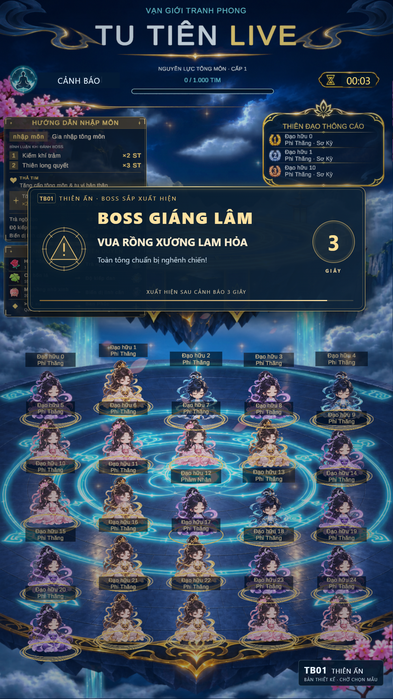
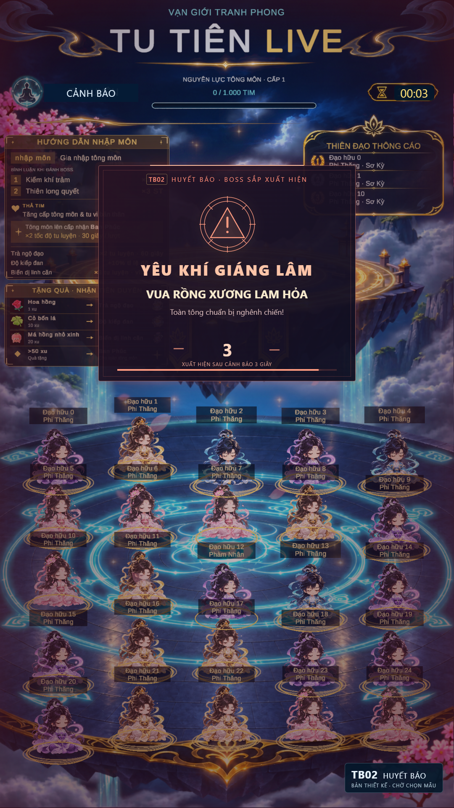
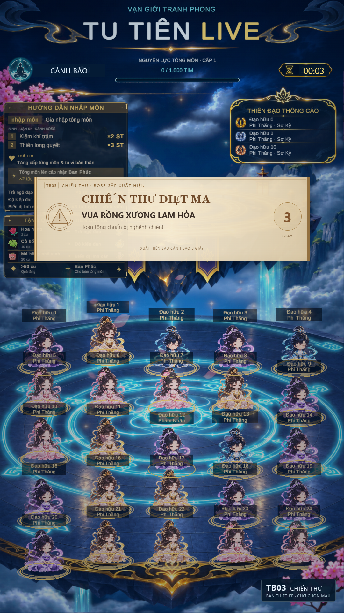

TB01 · THIÊN ẤN
Ấn vàng · uy nghi

Cảnh báo3 giây, SFX tự tạo và rung nhẹ, sau đó mới hiện boss. Ba mẫu dùng cùng boss để so sánh phong cách.
Ấn vàng · uy nghi

Huyết sắc · khẩn cấp

Cuộn thư · gọn rõ

Attack thường
Kiếm khí trảm
Thiên long quyết
Bộ này là thiết kế HTML chờ chọn; chưa lắp hiệu ứng, âm thanh hoặc delay3 giây vào game Unity/Node.